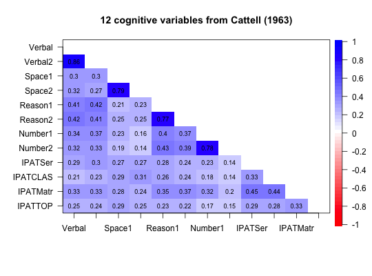

Rindskopf and Rose (1988) use this data set to demonstrate confirmatory second order factor models. It is a nice example data set to explore hierarchical structure and alternative factor solutions. It contains measures of fluid and crystallized intelligence.
data("cattell")
The format is: num [1:12, 1:12] 1 0.86 0.3 0.32 0.41 0.42 0.34 0.32 0.29 0.21 ... - attr(*, "dimnames")=List of 2 ..$ : chr [1:12] "Verbal" "Verbal2" "Space1" "Space2" ... ..$ : chr [1:12] "Verbal" "Verbal2" "Space1" "Space2" ...
Cattell (1963) reported on 8 cognitive variables from Thurstone and four from the Institute for Personality Assessment Test (IPAT). Rindskopf and Rose (1988) use this data set as an example of second order factor analysis. It is thus a nice set for examining alternative solutions such as bifactor rotation, omega hierarchical, as well as esem and interbattery factor analysis.
David Rindskopf and Tedd Rose, (1988) Some Theory and Applications of Confirmatory Second- Order Factor Analysis, Multivariate Behavioral Research, 23, 51-67.
Cattell, R. B. (1963).Theory of fluid and crystallized intelligence: A critical experiment. Journal of Educational Psychology, 54, 1-22.
David Rindskopf and Tedd Rose, (1988) Some Theory and Applications of Confirmatory Second- Order Factor Analysis, Multivariate Behavioral Research, 23, 51-67.
data(cattell) corPlot(cattell,numbers=TRUE,upper=FALSE,diag=FALSE, main="12 cognitive variables from Cattell (1963)")